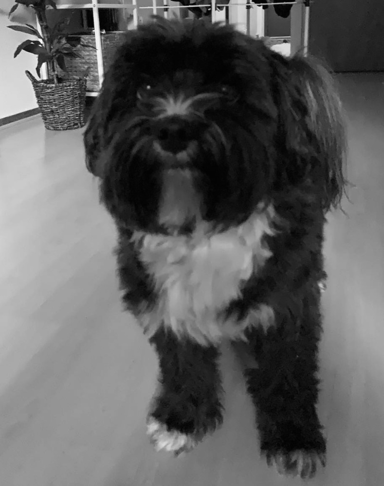

My dear Charlie. My dear beloved friend. I think of you everyday. Life feels empty without you. I miss you so much. You made me laugh everyday and made sure I wasn't sad. When I was sad you used to lay on my chest and make sure I wasn't alone at least. Your bed is still next to mine in case you come and visit.
My adorable cat. You came into my life when I needed you. Unfortunately you never met Charlie but it's okay. You wouldn't get along either way. I love you just as much. Especially when i'm playing piano and you join and sing along in key. I think you had perfect pitch in your past life.